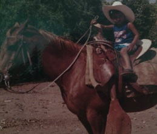
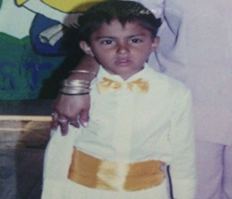
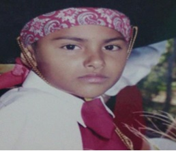
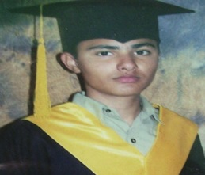
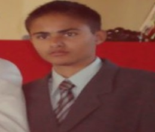
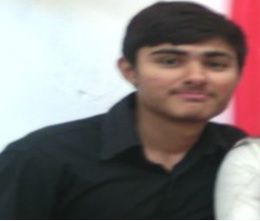

Biografia
Volver al inicio
Cosas que me gusta hacer
Aventuras
Lo que no me gusta
En este apartado podras ver el resumen de mi vida dividido por el comienzo e institutos academicos
Comienzo
Nací en el Los Mochis, pero mis papas son del ejido Vinaterias, El Fuerte, pesaba 2.3 kg, y media aproximadamente 48 centímetros, en mi etapa de bebe era cuidado por mi abuela o tíos, pues mis papas trabajaban, dicen que una vez me caí de la cama porque de bebe nunca me estaba quieto y que mis tíos se espantaron mucho, pero afortunadamente no pasó nada grave y solo fue el susto que se llevaron mis familiares. Yo era el hijo menor y a veces mi hermano también tenía que cuidarme pues él es 6 años mayor que yo y a veces le tocaba batallarme, el recuerda una vez que yo tenía 2 años y que sin querer por andar de curioso toque un cable que conducía corriente de una lavadora y que me quede electrocutado hasta que se dio cuenta mi papa y que me despego, dicen que estaba votando como pez fuera del agua, mientras mi hermano no sabía lo que pasaba, después de eso me llevaron al doctor y me dieron pastillas para estabilizar mi pulso cardiaco pues no paso a mayores por suerte me despegaron a tiempo y rápido. A los 3 años fue cuando por primera vez monte mi primer caballo en el ejido ya mencionado, el caballo era de mi abuelo materno.

Kinder
Recuerdo cuando era niño y tenía 4 años, en ese tiempo apenas iba en el kínder, ese kínder se encontraba atrás de un monte de la comunidad de la Constancia, El Fuerte donde he vivido casi toda mi vida, fue ahí donde conocí a varios amigos y compañeros, maestros y maestras por primera vez en mi vida, yo asistía al kínder junto con mi primer amigo José Carlos que era mi vecino, recuerdo que nos íbamos juntos a caminando hacia allá o algunos días mi papa nos llevaba en su auto un Datsun Stanza 1982 el cual recuerdo muy bien porque era toda una reliquia para él, traía varias calcomanías de los cañeros pues a él le gusta mucho el Beisbol, siempre que nos llevaba en su carro quería que fuéramos muy tranquilos y sin hacer relajo ya que quería mucho a ese auto y recuerdo que una vez mi amigo y yo nos subimos sin que él se diera cuenta o sin su permiso y estábamos moviéndole al volante y a la palanca de los cambios y de repente el llego y nos miró y nos bajó con una buena regañada que nosotros corrimos asustados y riéndonos a la vez, fue algo muy divertido y que nos dio un buen susto a la vez. A mi amigo y a mí en el kínder nos gustaba mucho subirnos a las llantas y al techo de la dirección, me acuerdo que nos jugábamos carreras a ver quién lograba subir más rápido por las bases de los tejabanes, nosotros íbamos en el 3ero B y una vez me acuerdo que nos agarramos a golpes por unas llantas contra los del 3ero A y mi amigo y yo los corrimos tirándoles ladrillazos y recuerdo que si le pegamos a uno en el pie y nos metieron a la dirección y mandaron llamar a nuestros papas.

Primaria
A la edad de 6 años fue cuando comencé ir a la primaria, fue aquí mismo en La Constancia, y al igual que en el kínder recuerdo que iba en el grupo “B” y mi amigo José Carlos también, ahí conocimos a una maestra muy agradable y amigable que se portaba muy bien con nosotros su nombre era Mayra y fue quien nos dio clases en primer y segundo año, la recuerdo muy bien porque siempre que nos metíamos en problemas ella nos echaba mucho la mano y nos trataba con mucho cariño y en las posadas nos daba mucha comida y dulces, en el salón de clases siempre trataba que todos aprendiéramos y tenía mucha paciencia con todos, siempre nos trató muy bien, recuerdo que a finales de año en la primaria siempre hacían barbacoa y era hecha en hoyos o “pozos” y una vez en el 3er año, cuando estaban cocinando la barbacoa en el poso unos niños estaban jugando cercas o alrededor de ahí y un niño no se fijó por estar jugando con sus compañeros y cayo dentro del pozo y todos gritando que lo auxiliaran, a nosotros la maestra nos alejó de ahí y desgraciadamente no pudieron salvar al niño y murió quemado, desde entonces esa leyenda siempre fue contada en la primaria y fue una gran tragedia ese día. En casi toda la primaria en los recreos me la pasaba jugando futbol detrás de las aulas y recuerdo que no teníamos porterías y usábamos unos árboles de pingüicas o mochilas, recuerdo una vez que jugando futbol como en 5to grado yo traía brakets y de un balonazo ahí jugando me volaron un braket, afortunadamente no agarro mis labios y fue solamente el braket el que fue impactado por el balón y me espante mucho, me miraba muy gracioso con el braket todo roto y mis compañeros se reían.
La secundaria se encontraba enfrente de la primaria y recuerdo que cuando era temporada de mangos, nos agarrábamos a mangazos contra los de la secundaria y a veces sin querer le pegábamos a los carros, una vez hasta quebramos el vidrio de uno auto de un profesor y se hizo un gran espectáculo todos corrían gritando y echando burla y riéndose como si hubiéramos conseguido algo muy importante, al momento de que se dieron cuenta los maestros todos corrimos y no hicieron responsable a nadie porque éramos muchos contando a los alumnos de la secundaria también.

Secundaria
A los 12 años entre a la secundaria y fue aquí mismo en La Constancia, solamente que en la secundaria había quedado en el grupo del “E” pero no me gustaba estar en ese grupo y nuevamente volví a estar en el “B” como en el kínder y primaria, esta vez ya no estaba junto a mi amigo José Carlos él había quedado en el “D”, y bueno pues en la secundaria no me agrado mucho pues los profesores ahí eran muy desagradables y con muchas represalias hacia mi familia, creo que fue la peor etapa de mi vida pues me toco un grupo con compañeros muy desagradables y con muy malas costumbres siempre se la pasaban buscando pleitos y golpeándose entre todos ni siquiera respetaban a los maestros, yo estaba en el taller de Dibujo Técnico y era un asco para dibujar mis dibujos parecían garabatos hechos por niños del kínder, pero la razón porque me metí en ese taller era porque nos dejaban agarrar unas mini laptop para ver los diseños y pues yo ahí aprovechaba para jugar o hacer otras actividades que no fueran de la materia. Una vez cuando iba en 3ero una maestra de las que más odio nos tenía me hizo participar en los honores a la bandera al hacerme pasar a decir las efemérides del mes correspondiente y yo me agarre alegando con ella porque le decía que lo leería y ella se enojaba y me decía que me lo tenía que memorizar porque en esa fecha iban a visitar el plantel otras instituciones y el comisario del ejido y me daba mucha vergüenza nunca había pasado a participar en los honores, cuando se llegó el día de los honores yo saque la hoja de las efemérides y la leí toda y voltee a mirar a la maestra y me puso una cara como de que muy enojada pero al final cuando se terminó todo me felicito por lo que me sorprendí a pesar de a ver discutido con ella varias veces de que no quería hacerlo y que me amenazaba de que si lo leía me reprobaría al final aunque lo leyera me felicito y no pasó nada más.

Preparatoria
Cuando tenía 14 años empecé la preparatoria esta vez fue en un ejido diferente fue en el ejido 2 de Abril en el CBTa #81 esta fue una de mis etapas favoritas pues considero que mi paso por la prepa fue buenísimo ahí conocí a muchas personas y maestros muy agradables y amistosos, fue todo muy diferente a como me la pase en la secundaria, fue aquí en la preparatoria donde conocí a varios amigos que los considero como si fueran mis hermanos, esta vez me toco estar en el grupo “C” y estaba en la especialidad de informática, recuerdo que en lugar de entrar a mis clases o actividades en los centros de cómputo a veces nos la pasábamos en las parcelas o en los viveros o con los animales del establo junto con nuestros compañeros de la otra especialidad que era la de Agropecuario, mi pasatiempos en la preparatoria en el recreo era jugar Futbol, o Voleibol y a veces ir a las parcelas a tirarnos con terrones u olotes de los campos de maíz junto a mis compañeros. La preparatoria me gustó mucho porque la mayoría de mis tutores a finales de parciales recuerdo que nos traían pizza o hacíamos convivios ya sea en el mismo plantel o a veces hasta rentábamos locales de otros ejidos para pasarla bien entre todo el grupo, éramos todos o la mayoría muy unidos, recuerdo que también nos llevaron a visitar varios lugares, como la pérgola en Los Mochis, Los álamos en Choix, Las playas de Mazatlán, y a los centros de comunicación de otros institutos, creo que a la mayoría de los maestros les agradaba nuestro grupo pues viajamos mucho y con diferentes profesores.
A las fiestas de bienvenidas y de ese tipo las hacían en un antro en Los Mochis y era “El Tabu” que actualmente ya no existe, recuerdo que casi siempre íbamos la mayoría de mi grupo y la pasábamos ahí bailando y conviviendo con las demás personas de la preparatoria, recuerdo una vez que un profesor en ese antro se resbaló y cayo de una manera muy graciosa y todos se rieron de el, pues en ese antro casi no había luz en el área de los baños y varios eran los que se tropezaban con un escalón que ni se miraba, fue tan gracioso el golpe que se dio que hasta otros compañeros maestros de él se reían y él lo vio por el lado bueno y también sonreía, todo eso hacían momentos muy especiales en la preparatoria, pues nadie miraba con malos ojos a nadie.

Universidad
Fue hasta los 18 años que comencé mi carrera universitaria, decidí estudiar Ing. Informática en el Instituto Tecnológico de Los Mochis, y es donde actualmente me encuentro cursando el 6to semestre, mi inicio en la carrera fue relativamente bueno, conocí a varios compañeros con los cuales rápidamente empecé a llevarme muy bien, fue aquí donde experimente por primera vez una exposición de proyectos en el “Domo”, esta vez uno de mis pasatiempos fue entrenar Kickboxing y box, es decir cambie el deporte de balón por uno de contacto probando así nuevas cosas, y me gusto también el deporte de contacto , que después de terminar mi para escolar de kickboxing, tome otro el cual era de Box, me gustaba mucho cuando hacíamos sparring pues la adrenalina era muy alta y hacia que me sintiera como alguien muy fuerte, aún recuerdo mi primer sparring fue contra un compañero de clases y estuvo muy reñida la pelea que fue un empate, ambos terminamos muy satisfechos y cansados. Aquí conocí a maestros muy diferentes a los que había tenido ya, pero está bien poco a poco me adapte y pues lo pensé y dije: está bien siempre es divertido probar cosas nuevas y diferentes estilos de aprendizaje. Posteriormente cuando todo iba muy bien a partir del 3er semestre en adelante me empezaron a atacar unas enfermedades muy raras, Fiebres, Infecciones, Malestares estomacales, los cuales me hicieron que me ausentara muchos días pues hasta tenían que Encamarme mínimo 4 días y llegue estar en el hospital durante por 8 días, sin duda fue una de las peores etapas de mi vida pero que también me dieron muchas lecciones, me daban tantos medicamentos que a veces hasta ni comía nada, recuerdo que lo poco que llegaba a comer lo vomitaba, a veces pensaba que hasta moriría, mis padres y familiares estaban muy preocupados e impactados, pues cada 40 días volvía a recaer, y fue que gracias a ellos y a su apoyo que poco a poco iba resistiendo un poco más los tratamientos a los cuales era sometido y fue hasta 5to semestre que ya mi salud fue totalmente estable y sin ningunas recaídas, fue ahí donde me sentía como una persona nueva y que empezaba a valorar muchas cosas nuevamente, mis amigos y compañeros también se preocuparon por mi cosa que siempre tendré presente, espero y mi etapa en la universidad termine de buena manera y que todo me salga bien.
